01 We treat for
Osteo Arthritis (Knee Pain)
Osteoarthritis is also called degenerative joint disease or degenerative arthritis. It is the most common chronic joint condition. Osteoarthritis results from overuse of joints but most commonly it is an aging phenomenon. It can be the consequence of demanding sports where joints may be injured or obesity, which places increased load on weight bearing joints. Osteoarthritis in the hands is frequently inherited and often happens in middle-aged women. Osteoarthritis is most common in joints that bear weight — such as the knees, hips, feet, and spine. It often comes on gradually over months or even years. Except for the pain in the affected joint, you usually do not feel sick, and there is no unusual fatigue or tiredness as there is with some other types of arthritis.

02 We treat for
Peri Arthritis (Shoulder Pain)
The shoulder comprises bones, ligaments, tendons, and muscles that connect the arm to the torso. The glenohumeral joint, or shoulder joint, is a ball-and-socket type joint. The "ball" is the top, rounded part of the humerus, and the "socket" is the bowl-shaped part of the scapula, called the glenoid, into which the ball fits. This joint allows the arm to move in a circular rotation as well as towards and away from the body.
The joint capsule is a group of soft tissue ligaments that surround the joint. The rotator cuff is a group of four muscles that pull the humerus into the scapula. The rotator cuff muscles stabilize the glenohumeral joint and help with rotation of the arm.
“Frozen shoulder,” also called adhesive capsulitis or periarthritis of the shoulder, is a chronic, inflammatory disorder of the shoulder and surrounding soft tissues. This condition is frequently caused by injury, leading to pain and lack of use. As the joint becomes progressively tighter and stiffer, simple movements, such as raising the arm, become difficult. If inflammation occurs within the capsule itself, the shoulder bones are unable to move within the joint. In some instances, the patient may be unable to move the shoulder at all.
The condition rarely appears in people under age 40. An arthrogram may be needed to confirm the diagnosis. Treatment can include non-steroidal anti-inflammatory medications (NSAIDs) and physical therapy. However, it may take up to a year to see improvement. Arthroscopic surgery and shoulder manipulation under anesthesia may be necessary in more severe cases.
The joint capsule is a group of soft tissue ligaments that surround the joint. The rotator cuff is a group of four muscles that pull the humerus into the scapula. The rotator cuff muscles stabilize the glenohumeral joint and help with rotation of the arm.
“Frozen shoulder,” also called adhesive capsulitis or periarthritis of the shoulder, is a chronic, inflammatory disorder of the shoulder and surrounding soft tissues. This condition is frequently caused by injury, leading to pain and lack of use. As the joint becomes progressively tighter and stiffer, simple movements, such as raising the arm, become difficult. If inflammation occurs within the capsule itself, the shoulder bones are unable to move within the joint. In some instances, the patient may be unable to move the shoulder at all.
The condition rarely appears in people under age 40. An arthrogram may be needed to confirm the diagnosis. Treatment can include non-steroidal anti-inflammatory medications (NSAIDs) and physical therapy. However, it may take up to a year to see improvement. Arthroscopic surgery and shoulder manipulation under anesthesia may be necessary in more severe cases.
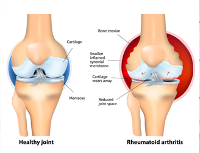
03 We treat for
Rheumatoid Arthritis
The rehabilitation management of individuals with rheumatoid arthritis is imperative to decrease the potential long-term disabilities as noted above. Specifically, individuals with rheumatoid arthritis are at risk for decreased flexibility, muscle atrophy, decreased muscle strength and reduced cardiovascular endurance.
Deficit in such areas will lead to functional compromise and increased health care expenditures. Therefore, a multifactorial approach utilizing medications and rehabilitative techniques is necessary. Fortunately, under proper counseling, individuals with rheumatoid arthritis can safely exercise, improving overall physical fitness, greater ease for activities of daily living and an improved sense of well being.
Rehabilitative techniques include appropriate periods of rest and activity modification; therapeutic modalities such as heat/cold or electrical stimulation; bracing and adaptive equipment.
Deficit in such areas will lead to functional compromise and increased health care expenditures. Therefore, a multifactorial approach utilizing medications and rehabilitative techniques is necessary. Fortunately, under proper counseling, individuals with rheumatoid arthritis can safely exercise, improving overall physical fitness, greater ease for activities of daily living and an improved sense of well being.
Rehabilitative techniques include appropriate periods of rest and activity modification; therapeutic modalities such as heat/cold or electrical stimulation; bracing and adaptive equipment.
04 We treat for
Spondylitis (Neck Pain)
In spondylosis (spinal osteoathritis), your spinal joints don't move as well as they used to because of age-related changes in your spine, similar to arthritis. This can make it very painful to move because of decreased mobility within the spine itself. Your doctor may recommend physical therapy as part of your treatment plan because a physical therapist can help you maintain and increase mobility, learn ways to reduce pain, strengthen your spinal muscles so that they better support your spine, and stretch muscles that may be increasing nerve compression in your spine.
Deep tissue massage
Physical therapy involves three main components: education, passive treatments, and active treatments. A physical therapist uses passive treatments to relax you and your body and to decrease acute pain or inflammation. They're called passive because you don't have to actively participate. If you're experiencing acute pain, you'll most likely start with passive treatments as your body heals and/or adjusts to the pain. However, the goal of physical therapy is to get into active treatments. These are therapeutic exercises that strengthen your body so that your spine has better support.
Deep tissue massage
Physical therapy involves three main components: education, passive treatments, and active treatments. A physical therapist uses passive treatments to relax you and your body and to decrease acute pain or inflammation. They're called passive because you don't have to actively participate. If you're experiencing acute pain, you'll most likely start with passive treatments as your body heals and/or adjusts to the pain. However, the goal of physical therapy is to get into active treatments. These are therapeutic exercises that strengthen your body so that your spine has better support.
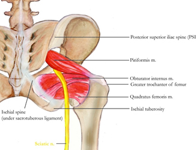
05 We treat for
Sciatica (Back Pain)
Although sciatica is a relatively common form of low back pain and leg pain, the true meaning of the term is often misunderstood. Sciatica is a set of symptoms rather than a diagnosis for what is irritating the root of the nerve, causing the pain. This point is important, because exercise for sciatica or treatment for sciatica will often be different, depending upon the underlying cause of the symptoms.
Sciatica is a general term that refers to pain caused by compression or irritation of one or more nerves exiting the lower spine that make up the sciatic nerve. There are a number of different conditions that can cause sciatica pain. The medical term for sciatica is a radiculopathy, which means that a spinal disc has extended beyond its normal position and is irritating the radicular nerve (nerve root) in the lower back, which connects with the sciatic nerve. The sciatic nerve branches off as it travels down the lower extremity through the back of the leg. Sciatic pain can be experienced along this nerve route.
Sciatica is a general term that refers to pain caused by compression or irritation of one or more nerves exiting the lower spine that make up the sciatic nerve. There are a number of different conditions that can cause sciatica pain. The medical term for sciatica is a radiculopathy, which means that a spinal disc has extended beyond its normal position and is irritating the radicular nerve (nerve root) in the lower back, which connects with the sciatic nerve. The sciatic nerve branches off as it travels down the lower extremity through the back of the leg. Sciatic pain can be experienced along this nerve route.
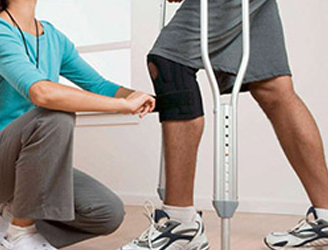
06 We treat for
Fracture Rehabilitation
Most fractured (broken) bones will heal in usually six weeks. But that is only half of the problem.
Unfortunately when you have enough stress placed through your body to fracture a bone there's usually a lot of other soft tissues and structures that have been damaged in the process. Add to that the common use of immobilisation in plaster, you'll have joint stiffness and considerable muscle weakness.
This may even effect joints that don't seem related to the break. For example, a fractured shoulder may result in a very stiff elbow or wrist just because you were keeping your shoulder in a sling for a few weeks.
Unfortunately when you have enough stress placed through your body to fracture a bone there's usually a lot of other soft tissues and structures that have been damaged in the process. Add to that the common use of immobilisation in plaster, you'll have joint stiffness and considerable muscle weakness.
This may even effect joints that don't seem related to the break. For example, a fractured shoulder may result in a very stiff elbow or wrist just because you were keeping your shoulder in a sling for a few weeks.
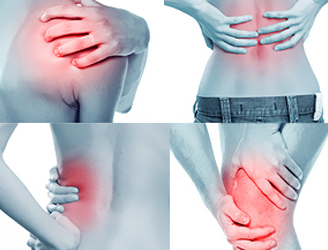
07 We treat for
Muscle & Joint Pains
We assess and treat all manner of joint pain and dysfunction. Seeing a physiotherapist is a really good first port of call if you have a problem and many GPs also refer clients to us for a musculo-skeletal assessment and diagnosis.
We can advise you on whether physiotherapy treatment is appropriate for you. If it is, we can provide treatment and, if it is not, we can advise you on what your best next step should be e.g. seeing your GP, another Specialist such as an Orthopaedic Consultant or Rheumatologist or any other options.
We can advise you on whether physiotherapy treatment is appropriate for you. If it is, we can provide treatment and, if it is not, we can advise you on what your best next step should be e.g. seeing your GP, another Specialist such as an Orthopaedic Consultant or Rheumatologist or any other options.
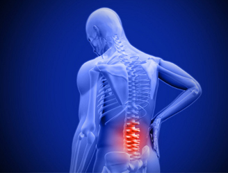
08 We treat for
Spinal Disc Problems
Spinal pain is one of the main reasons why many clients come to see us. There are many structures in the spine that can cause pain or other symptoms such as stiffness, paraesthesia (pins & needles), or referred pain into the arm or the leg. Symptoms can come from the joints, discs, muscles nerves or may not even be coming from the spine itself. The problem can be from muscles overworking, underworking, poor posture, wear and tear and a huge number of other factors.
Types of Spinal Pain we treat
Low back pain
Neck pain, tension and/or stiffness
Mid-back pain, spasm, muscle knots
Sciatica,
Sacro-iliac joint pain
Pregnancy-related back pain
Mechanical Spinal Pain
A lot of people that we see have what is classed as 'mechanical spinal pain'. This is pain caused by dysfunction of some spinal structure e.g a stiff joint or spinal segment or muscle strain similar to what you can get in any other part of the body. This can be caused by an injury or in many cases a constant misuse of the body e.g. with poor posture, using the wrong muscles to achieve a movement or muscle imbalance.
We can carry out a physiotherapy assessment and give you a clinical diagnosis as to what we think the problem is and provide treatment if appropriate.
Types of Spinal Pain we treat
Low back pain
Neck pain, tension and/or stiffness
Mid-back pain, spasm, muscle knots
Sciatica,
Sacro-iliac joint pain
Pregnancy-related back pain
Mechanical Spinal Pain
A lot of people that we see have what is classed as 'mechanical spinal pain'. This is pain caused by dysfunction of some spinal structure e.g a stiff joint or spinal segment or muscle strain similar to what you can get in any other part of the body. This can be caused by an injury or in many cases a constant misuse of the body e.g. with poor posture, using the wrong muscles to achieve a movement or muscle imbalance.
We can carry out a physiotherapy assessment and give you a clinical diagnosis as to what we think the problem is and provide treatment if appropriate.
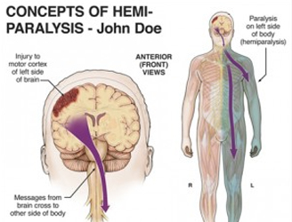
09 We treat for
Hemiplegia (Paralysis)
Hemiplegia in infants and children is a type of Cerebral Palsy that results from damage to the part (hemisphere) of the brain that controls muscle movements. This damage may occur before, during or shortly after birth.
The term hemiplegia means that the paralysis is on one vertical half of the body. A similar medical term, hemiparesis, means a weakness on one side of the body. In children with hemiplegia, the paralysis in the body occurs on the side opposite the affected part of the brain. For example, if the left side of the child’s brain is injured, then the paralysis will be on the right side of the child’s body.
The term hemiplegia means that the paralysis is on one vertical half of the body. A similar medical term, hemiparesis, means a weakness on one side of the body. In children with hemiplegia, the paralysis in the body occurs on the side opposite the affected part of the brain. For example, if the left side of the child’s brain is injured, then the paralysis will be on the right side of the child’s body.
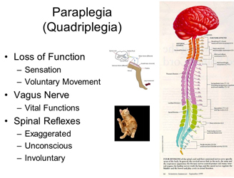
10 We treat for
Paraplegia
Physiotherapy techniques in paraplegia have developed considerably in the last ten years since the proper establishment of spinal units. The paraplegic patient is best served by such units where the patient-physiotherapist relationship is indeed a close one. All the techniques of physiotherapy have one aim in view, the complete rehabilitation of the patient.
11 We treat for
Quadriplegia
Paralysis can be either partial or complete. Paralysis of both the arms and legs has been traditionally been called quadriplegia. Quad comes from the Latin for four and plegia comes from the Greek for inability to move. Currently the term tetraplegia is becoming more popular, but it means the same thing. Tetra is from the Greek for inability to move.
The Causes of Quadriplegia
The primary cause of quadriplegia is a spinal cord injury, but other conditions such as cerebral palsy and strokes can cause a similar appearing paralysis. The amount of impairment resulting from a spinal cord injury depends on the part of the spinal cord injured and the amount of damage done. Injury to the spinal cord can be devastating because the spinal cord and the brain are the main parts of the central nervous system, which sends messages throughout your body.
When the spinal cord is injured the brain cannot properly communicate with it and so sensation and movement are impaired. The spinal cord is not the spine itself; it is the nerve system encased in the vertebrae and discs which make up the spine.
The Causes of Quadriplegia
The primary cause of quadriplegia is a spinal cord injury, but other conditions such as cerebral palsy and strokes can cause a similar appearing paralysis. The amount of impairment resulting from a spinal cord injury depends on the part of the spinal cord injured and the amount of damage done. Injury to the spinal cord can be devastating because the spinal cord and the brain are the main parts of the central nervous system, which sends messages throughout your body.
When the spinal cord is injured the brain cannot properly communicate with it and so sensation and movement are impaired. The spinal cord is not the spine itself; it is the nerve system encased in the vertebrae and discs which make up the spine.
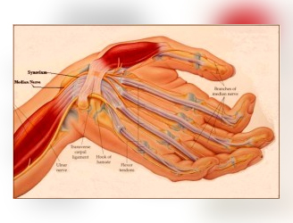
12 We treat for
G.B. Syndrome
GBS disease or Guillain-Barre Syndrome is a disease of the nervous system due to damage to the myelin sheath around nerves. The myelin sheath acts as an insulator the same as rubber or plastic around electrical wires. Ascending paralysis, weakness beginning in the feet and hands and migrating towards the trunk, is the most typical symptom. It can cause life-threatening complications, particularly if the breathing muscles are affected or if there is dysfunction of the autonomic nervous system. The disease is usually triggered by an acute infection. In many cases it follows shortly after a virus infection. It is also rarely associated with immunizations, surgery, and childbirth.
Although most people recover from GBS disease, the length of your illness is unpredictable, and may require months of hospital care and rehabilitation.
As nerve function returns, patient may need assistance to learn how to use affected muscles. Rehabilitation may include several types of therapy.
Physical therapy. Physical therapy stimulates muscles and joints to rebuild strength, flexibility and range of motion. Occupational therapy. Occupational therapy focuses on activities to help patient be as self-sufficient as possible in daily life. Assistive devices. patient may need to learn to use assistive devices, such as leg or arm braces, canes, walkers and wheelchairs to aid mobility during recovery or, if GBS causes permanent disabilities, for long-term use.
Physiotherapy treatment for GBS disease will:
Regain patient's independence with everyday tasks.
Retrain normal movement patterns by teaching patient how to achieve activities in different ways.
Muscle strength training, exercising as often as possible in the correct way.
Stretch tight muscles and prevent soft tissue contractures.
Improve patient's posture in lying, sitting and standing and sleeping.
Increase patient's mobility.
Increase balance and coordination.
Increase fitness and energy levels.
Increased ability to relax.
Promote recovery.
educate about GBS disease and symptoms.
Although most people recover from GBS disease, the length of your illness is unpredictable, and may require months of hospital care and rehabilitation.
As nerve function returns, patient may need assistance to learn how to use affected muscles. Rehabilitation may include several types of therapy.
Physical therapy. Physical therapy stimulates muscles and joints to rebuild strength, flexibility and range of motion. Occupational therapy. Occupational therapy focuses on activities to help patient be as self-sufficient as possible in daily life. Assistive devices. patient may need to learn to use assistive devices, such as leg or arm braces, canes, walkers and wheelchairs to aid mobility during recovery or, if GBS causes permanent disabilities, for long-term use.
Physiotherapy treatment for GBS disease will:
Regain patient's independence with everyday tasks.
Retrain normal movement patterns by teaching patient how to achieve activities in different ways.
Muscle strength training, exercising as often as possible in the correct way.
Stretch tight muscles and prevent soft tissue contractures.
Improve patient's posture in lying, sitting and standing and sleeping.
Increase patient's mobility.
Increase balance and coordination.
Increase fitness and energy levels.
Increased ability to relax.
Promote recovery.
educate about GBS disease and symptoms.
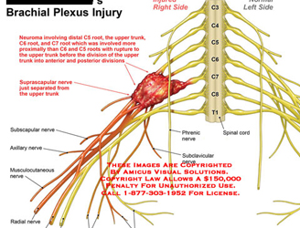
13 We treat for
Brachial Plexus Injury
Physical Therapy
At onset of injury, nonsteroidal anti-inflammatory drugs (NSAIDs), early mobilization, and moist heat packs are the favorable methods of treatment for acute injuries. In the subacute phase, a gradual progression from ROM activity to cervical and shoulder muscle strengthening is recommended.
Medical Issues/Complications
If symptoms persist (eg, persistent weakness, chronic neurapraxia) regardless of therapy, further consideration for additional imaging and referral should be undertaken.
Surgical Intervention
Surgical intervention is rarely needed, is injury-specific, and should be directed by a neurosurgical or orthopedic spine surgeon.
Consultations
Neurosurgery spine/orthopedic spine
Other Treatment
Manipulation is not recommended as a first line intervention, but it may be a helpful adjunct after full medical assessment has been completed.
At onset of injury, nonsteroidal anti-inflammatory drugs (NSAIDs), early mobilization, and moist heat packs are the favorable methods of treatment for acute injuries. In the subacute phase, a gradual progression from ROM activity to cervical and shoulder muscle strengthening is recommended.
Medical Issues/Complications
If symptoms persist (eg, persistent weakness, chronic neurapraxia) regardless of therapy, further consideration for additional imaging and referral should be undertaken.
Surgical Intervention
Surgical intervention is rarely needed, is injury-specific, and should be directed by a neurosurgical or orthopedic spine surgeon.
Consultations
Neurosurgery spine/orthopedic spine
Other Treatment
Manipulation is not recommended as a first line intervention, but it may be a helpful adjunct after full medical assessment has been completed.
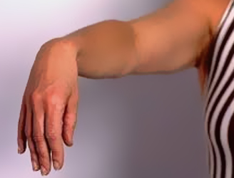
14 We treat for
Wrist drop & Foot drop
Treatment for a Wrist Drop solely depends on the cause of the condition. In mild cases of Wrist Drop, just a period of rest along with use of splints and some physical therapy exercises may be enough to treat the condition. In moderate to severe cases of Wrist Drop, a surgery may be done to treat the condition. The procedure will be done to repair the radial nerve and if there is any compression of the radial nerve then to free the nerve so that symptoms of wrist drop can be controlled. Postsurgery, the hand affected with wrist drop may remain immobilized for a few weeks to allow the wounds to heal. After appropriate time has elapsed allowing the wound to heal, then the patient may undergo physical therapy focusing on strength and range of motion. Gradual return to work may commence after about 15-20 weeks post surgery. In case if surgery is not required to treat wrist drop then the following home remedies can be tried:
Resting the wrist until the patient feels return of strength and sensation
Use of splint or sling can be a vital part of treatment for Wrist Drop.
The patient needs to avoid positions that may put pressure on the wrist or underarm. Avoiding repetitive motions of the wrist will also be helpful.
Resting the wrist until the patient feels return of strength and sensation
Use of splint or sling can be a vital part of treatment for Wrist Drop.
The patient needs to avoid positions that may put pressure on the wrist or underarm. Avoiding repetitive motions of the wrist will also be helpful.
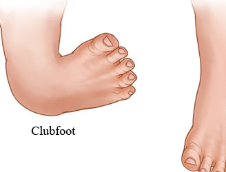
15 We treat for
Club Foot
What treatment options are available?
Treatment for clubfoot usually begins at birth. Treatment in the majority of infants will require both non-surgical treatment and surgery. The foot will never be normal, but treatment can provide a very functional foot that can be used for walking without pain.
Nonsurgical Treatment
The most commonly used non-surgical treatment in the newborn and infant is manipulation and casting. This is started as soon as possible. The foot is manipulated to stretch and loosen the tight structures. The foot is then placed in a cast to hold it in a corrected position. This is repeated every one or two weeks until the deformity is corrected or surgery is performed.
As any parent knows, the newborn grows rapidly after birth. The technique of manipulation and casting the foot is used to guide the growth of the foot towards the normal alignment. Without this guidance, the foot will remain deformed and may actually get worse. The greatest chance for correction of deformity occurs early in life when there is so much growth occurring.
There have been many different techniques proposed for the way the foot is manipulated and the way the casts are applied. Treatment of the infant with clubfoot is definitely one of the arts of medicine. Successful treatment requires patience and attention to detail.
The success of treatment of clubfoot by manipulation and casting alone varies greatly. The majority of infants will eventually require surgery but the manipulation and casting begins the process of guiding the foot towards a more normal form. In the infant that eventually needs surgery, the manipulation and casting are still required to obtain as much correction as possible prior to the surgery.
Treatment for clubfoot usually begins at birth. Treatment in the majority of infants will require both non-surgical treatment and surgery. The foot will never be normal, but treatment can provide a very functional foot that can be used for walking without pain.
Nonsurgical Treatment
The most commonly used non-surgical treatment in the newborn and infant is manipulation and casting. This is started as soon as possible. The foot is manipulated to stretch and loosen the tight structures. The foot is then placed in a cast to hold it in a corrected position. This is repeated every one or two weeks until the deformity is corrected or surgery is performed.
As any parent knows, the newborn grows rapidly after birth. The technique of manipulation and casting the foot is used to guide the growth of the foot towards the normal alignment. Without this guidance, the foot will remain deformed and may actually get worse. The greatest chance for correction of deformity occurs early in life when there is so much growth occurring.
There have been many different techniques proposed for the way the foot is manipulated and the way the casts are applied. Treatment of the infant with clubfoot is definitely one of the arts of medicine. Successful treatment requires patience and attention to detail.
The success of treatment of clubfoot by manipulation and casting alone varies greatly. The majority of infants will eventually require surgery but the manipulation and casting begins the process of guiding the foot towards a more normal form. In the infant that eventually needs surgery, the manipulation and casting are still required to obtain as much correction as possible prior to the surgery.
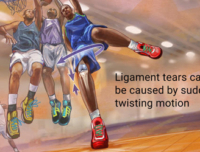
16 We treat for
Ligament Injuries
Treatment of a ligament injury varies depending on it's location and severity.
Grade I sprains usually heal within a few weeks. Maximal ligament strength will occur after six weeks when the collagen fibres have matured. Resting from painful activity, icing the injury, and some anti-inflammatory medications are useful. Physiotherapy will help to hasten the healing process via electrical modalities, massage, strengthening and joint exercises to guide the direction that the ligament fibres heal. This helps to prevent a future tear.
When a grade II sprain occurs, use of a weight-bearing brace or some supportive taping is common in early treatment. This helps to ease the pain and avoid stretching of the healing ligament. After a grade II injury, you can usually return to activity once the joint is stable and you are no longer having pain. This may take up to six weeks. Physiotherapy helps to hasten the healing process via electrical modalities, massage, strengthening and joint exercises to guide the direction that the ligament fibres heal. This helps to prevent a future tear and quickly return you to your pre-injury status.
When a grade III injury occurs, you usually wear a hinged knee brace to protect the injury from weight-bearing stresses. The aim is to allow for ligament healing and gradually return to normal activities. These injuries are most successfully treated via physiotherapy and may not return to their full level of activity for 3 to 4 months. Definitely seek professional advice in these cases.
Grade I sprains usually heal within a few weeks. Maximal ligament strength will occur after six weeks when the collagen fibres have matured. Resting from painful activity, icing the injury, and some anti-inflammatory medications are useful. Physiotherapy will help to hasten the healing process via electrical modalities, massage, strengthening and joint exercises to guide the direction that the ligament fibres heal. This helps to prevent a future tear.
When a grade II sprain occurs, use of a weight-bearing brace or some supportive taping is common in early treatment. This helps to ease the pain and avoid stretching of the healing ligament. After a grade II injury, you can usually return to activity once the joint is stable and you are no longer having pain. This may take up to six weeks. Physiotherapy helps to hasten the healing process via electrical modalities, massage, strengthening and joint exercises to guide the direction that the ligament fibres heal. This helps to prevent a future tear and quickly return you to your pre-injury status.
When a grade III injury occurs, you usually wear a hinged knee brace to protect the injury from weight-bearing stresses. The aim is to allow for ligament healing and gradually return to normal activities. These injuries are most successfully treated via physiotherapy and may not return to their full level of activity for 3 to 4 months. Definitely seek professional advice in these cases.
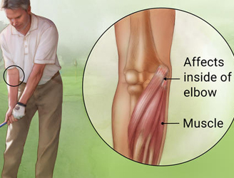
17 We treat for
Tennis elbow
Physiotherapy has been shown to be effective in the short and long-term management of tennis elbow.
Physiotherapy aims to achieve a:
Reduction of elbow pain.
Facilitation of tissue repair.
Restoration of normal joint range of motion and function.
Restoration of normal muscle length, strength and movement patterns.
Normalisation of your upper limb neurodynamics.
Normalisation of cervical joint function.
There are many ways to achieve these and, following a thorough assessment of your elbow, arm and neck, your physiotherapist will discuss the best strategy for you to use based on your symptoms and your lifestyle. Results are typically measured through patient feedback and measurement of pain-free grip strength.
Physiotherapy treatment can include gentle mobilisation of your neck and elbow joints, electrotherapy, elbow kinesio taping, muscle stretches, neural mobilisations, massage and strengthening.
tennis elbow taping
In some instances a tennis elbow brace may be beneficial. Your physiotherapist will discuss what treatment options are most suitable for you.
Physiotherapy aims to achieve a:
Reduction of elbow pain.
Facilitation of tissue repair.
Restoration of normal joint range of motion and function.
Restoration of normal muscle length, strength and movement patterns.
Normalisation of your upper limb neurodynamics.
Normalisation of cervical joint function.
There are many ways to achieve these and, following a thorough assessment of your elbow, arm and neck, your physiotherapist will discuss the best strategy for you to use based on your symptoms and your lifestyle. Results are typically measured through patient feedback and measurement of pain-free grip strength.
Physiotherapy treatment can include gentle mobilisation of your neck and elbow joints, electrotherapy, elbow kinesio taping, muscle stretches, neural mobilisations, massage and strengthening.
tennis elbow taping
In some instances a tennis elbow brace may be beneficial. Your physiotherapist will discuss what treatment options are most suitable for you.
18 We treat for
Golfers Elbow
Physiotherapy has been shown to be effective in the short and long-term management of tennis elbow.
Physiotherapy aims to achieve a:
Reduction of elbow pain.
Facilitation of tissue repair.
Restoration of normal joint range of motion and function.
Restoration of normal muscle length, strength and movement patterns.
Normalisation of your upper limb neurodynamics.
Normalisation of cervical joint function.
Physiotherapy treatment can include gentle mobilisation of your neck and elbow joints, electrotherapy, protective strapping, muscle stretches, neural mobilisations, massage and strengthening. In some instances a Golfer’s Elbow Brace (which is a tennis elbow brace worn on the opposite side of the elbow) may be beneficial.
Physiotherapy aims to achieve a:
Reduction of elbow pain.
Facilitation of tissue repair.
Restoration of normal joint range of motion and function.
Restoration of normal muscle length, strength and movement patterns.
Normalisation of your upper limb neurodynamics.
Normalisation of cervical joint function.
Physiotherapy treatment can include gentle mobilisation of your neck and elbow joints, electrotherapy, protective strapping, muscle stretches, neural mobilisations, massage and strengthening. In some instances a Golfer’s Elbow Brace (which is a tennis elbow brace worn on the opposite side of the elbow) may be beneficial.
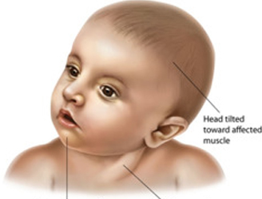
19 We treat for
Toritcollis
Torticollis treatment include medication, physical devices, botulinum toxin, physical therapy, stretching exercises, and surgery. In most people, torticollis resolves in several days to a few weeks. A few people will develop continuing neck problems for months to years. Persistent neck muscle spasms may require referral to a neurologist or surgeon.
It is important that parents get their child into physiotherapy as soon as possible. The older the child is, the tighter the SCM becomes and the harder it becomes to stretch the child due to their increased activity level.
At the physiotherapy initial evaluation the parents will be given a home exercise program including range of motion exercises, massage instructions, positioning ideas to discourage the child’s favored position, and strengthening exercises to help decrease any asymmetry that may be occurring.
It is important that parents get their child into physiotherapy as soon as possible. The older the child is, the tighter the SCM becomes and the harder it becomes to stretch the child due to their increased activity level.
At the physiotherapy initial evaluation the parents will be given a home exercise program including range of motion exercises, massage instructions, positioning ideas to discourage the child’s favored position, and strengthening exercises to help decrease any asymmetry that may be occurring.
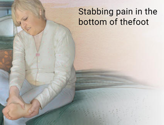
20 We treat for
Plantar Fasciitis (Heel Pain)
The good news is that plantar fasciitis is reversible and very successfully treated. About 90 percent of people with plantar fasciitis improve significantly within two months of initial treatment.
If your plantar fasciitis continues after a few months of conservative treatment, your doctor may inject your heel with steroidal anti-inflammatory medications (corticosteroid). Cortisone injections have been shown to have short-term benefits but they actually retard your progress in the medium to long-term, which usually means that you will suffer recurrent bouts for longer.
Due to poor foot biomechanics being the primary cause of your plantar fasciitis it is vital to thoroughly assess and correct your foot and leg biomechanics to prevent future plantar fasciitis episodes or the development of a heel spur.
Your physiotherapist is an expert in foot assessment and its dynamic biomechanical correction. They may recommend that you seek the advice of a podiatrist, who is an expert in the prescription on passive foot devices such as orthotics. Researchers have concluded that there are essentially 8 stages that need to be covered to effectively rehabilitate plantar fasciitis and prevent recurrence. These are: Phase 1 - Early Injury Protection: Pain Relief & Anti-inflammatory Tips
Phase 2: Regain Full Range of Motion
Phase 3: Restore Foot Arch Muscle Control
Phase 4: Restore Normal Calf & Leg Muscle Control
Phase 5: Restore Normal Foot Biomechanics
Phase 6: Improve Your Running and Landing Technique
Phase 7: Return to Sport or Work
Phase 8: Footwear Analysis
If your plantar fasciitis continues after a few months of conservative treatment, your doctor may inject your heel with steroidal anti-inflammatory medications (corticosteroid). Cortisone injections have been shown to have short-term benefits but they actually retard your progress in the medium to long-term, which usually means that you will suffer recurrent bouts for longer.
Due to poor foot biomechanics being the primary cause of your plantar fasciitis it is vital to thoroughly assess and correct your foot and leg biomechanics to prevent future plantar fasciitis episodes or the development of a heel spur.
Your physiotherapist is an expert in foot assessment and its dynamic biomechanical correction. They may recommend that you seek the advice of a podiatrist, who is an expert in the prescription on passive foot devices such as orthotics. Researchers have concluded that there are essentially 8 stages that need to be covered to effectively rehabilitate plantar fasciitis and prevent recurrence. These are: Phase 1 - Early Injury Protection: Pain Relief & Anti-inflammatory Tips
Phase 2: Regain Full Range of Motion
Phase 3: Restore Foot Arch Muscle Control
Phase 4: Restore Normal Calf & Leg Muscle Control
Phase 5: Restore Normal Foot Biomechanics
Phase 6: Improve Your Running and Landing Technique
Phase 7: Return to Sport or Work
Phase 8: Footwear Analysis
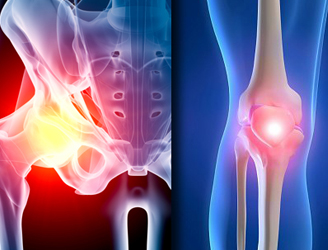
21 We treat for
Hip & Knee replacement Rehabilitation
Following your surgery, you will have many weeks of physical therapy (PT) to help ease your operated knee back into activity. PT is an integral part of your recovery and is very important in determining the outcome of your surgery.
We have a list of commonly used exercises, but your surgeon and physical therapist will prescribe a specific set of exercises that is best for your unique case.
These exercises are important to your overall recovery – preventing blood clots, improving circulation, improving flexibility and knee movement and strengthening muscles. While they may feel uncomfortable at first, they will become easier with time and help you return to normal activity.
Your physiotherapist may be trained in hands-on physiotherapy techniques such as:
Joint mobilisation (gentle gliding) techniques,
Joint manipulation,
Physiotherapy Instrument Mobilisation (PIM).
Minimal Energy Techniques (METs),
Muscle stretching,
Neurodynamics,
Massage and soft tissue techniques Physiotherapy Taping Acupuncture and Dry Needling Physiotherapy Exercises Biomechanical Analysis Sports Physiotherapy Workplace Physiotherapy
We have a list of commonly used exercises, but your surgeon and physical therapist will prescribe a specific set of exercises that is best for your unique case.
These exercises are important to your overall recovery – preventing blood clots, improving circulation, improving flexibility and knee movement and strengthening muscles. While they may feel uncomfortable at first, they will become easier with time and help you return to normal activity.
Your physiotherapist may be trained in hands-on physiotherapy techniques such as:
Joint mobilisation (gentle gliding) techniques,
Joint manipulation,
Physiotherapy Instrument Mobilisation (PIM).
Minimal Energy Techniques (METs),
Muscle stretching,
Neurodynamics,
Massage and soft tissue techniques Physiotherapy Taping Acupuncture and Dry Needling Physiotherapy Exercises Biomechanical Analysis Sports Physiotherapy Workplace Physiotherapy
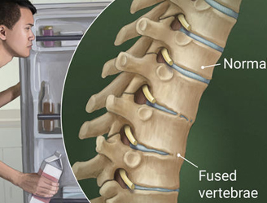
22 We treat for
Ankylosing
Spondylitis
Your GP and rheumatologist may prescribe medications to help control the inflammatory part of the disease. As well as seeing your GP or rheumatologist for check-ups, your physiotherapist plays an important role in helping you manage your ankylosing spondylitis.
PHASE I - Pain Relief
PHASE II - Restoring Normal ROM & Posture
PHASE III - Restore Normal Muscle Control & Strength
PHASE IV - Restoring Function and Return to Activity
PHASE V - Long Term Management
PHASE I - Pain Relief
PHASE II - Restoring Normal ROM & Posture
PHASE III - Restore Normal Muscle Control & Strength
PHASE IV - Restoring Function and Return to Activity
PHASE V - Long Term Management
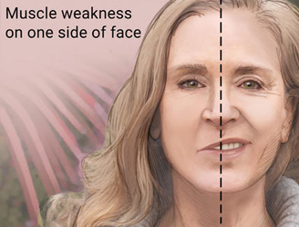
23 We treat for
Bells Palsy
Often, no treatment is needed. Symptoms often begin to improve right away. However, it may take weeks or even months for the muscles to get stronger, and this may be frustrating. Your health care provider may give you lubricating eye drops or eye ointments to keep the surface of the eye moist if you cannot close it completely. You may need to wear an eye patch while you sleep.
Sometimes medicines may be used, but it is not clear how much they help. If medicines are used, they should be started right away.
Corticosteroids may reduce swelling around the facial nerve Medications can fight the virus that may be causing Bell's palsy Surgery to relieve pressure on the nerve (decompression surgery) is controversial and has not been shown to routinely benefit people with Bell's palsy.
Sometimes medicines may be used, but it is not clear how much they help. If medicines are used, they should be started right away.
Corticosteroids may reduce swelling around the facial nerve Medications can fight the virus that may be causing Bell's palsy Surgery to relieve pressure on the nerve (decompression surgery) is controversial and has not been shown to routinely benefit people with Bell's palsy.
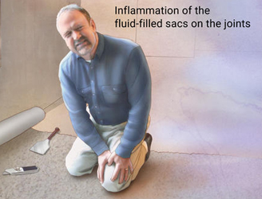
24 We treat for
Brusitis
Bursitis symptoms can have other causes as well. If you suspect bursitis, be sure to consult your physiotherapist. It is not uncommon that many people with bursitis also have other conditions, such as osteoarthritis or rheumatoid arthritis, which can make it hard to diagnose. You can also have torn tendons or ligaments that are causing the bursa to become irritated.
After assessing your biomechanics, your physiotherapist may also recommend specific exercises (stretches or strengthening) to improve your pain and ability to move, plus prevent a recurrence.
Untreated bursitis can result in calcification (bone growing) within the bursa and even nastier pain and disability.
After assessing your biomechanics, your physiotherapist may also recommend specific exercises (stretches or strengthening) to improve your pain and ability to move, plus prevent a recurrence.
Untreated bursitis can result in calcification (bone growing) within the bursa and even nastier pain and disability.
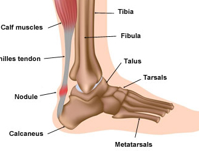
25 We treat for
Achilles Tendonitis
Achilles tendonitis is one of the most common problems that we see at PhysioWorks and it is unfortunately an injury that often recurs if you return to sport too quickly – especially if a thorough rehabilitation program is not completed.
Your calf muscle is a large powerful group of muscles that can produce sufficient force to run, jump and hop. Your achilles tendon attaches your calf muscle to your heel bone. It is a tendon or non-contractile soft tissue structure, which does have a different level of blood supply and function, which does alter the rehabilitation from a calf tear.
Researchers have concluded that there are essentially 7 stages that need to be covered to effectively rehabilitate these injuries and prevent recurrence.
Phase 1 - Early Injury Protection: Pain Reduction & Anti-inflammatory Phase
Phase 2: Regain Full Range of Motion
Phase 3: Restore Eccentric Muscle Strength
Phase 4: Restore Concentric Muscle Strength
Phase 5: Normalise Foot Biomechanics
Phase 6: Restore High Speed, Power, Proprioception & Agility
Phase 7: Return to Sport
Your calf muscle is a large powerful group of muscles that can produce sufficient force to run, jump and hop. Your achilles tendon attaches your calf muscle to your heel bone. It is a tendon or non-contractile soft tissue structure, which does have a different level of blood supply and function, which does alter the rehabilitation from a calf tear.
Researchers have concluded that there are essentially 7 stages that need to be covered to effectively rehabilitate these injuries and prevent recurrence.
Phase 1 - Early Injury Protection: Pain Reduction & Anti-inflammatory Phase
Phase 2: Regain Full Range of Motion
Phase 3: Restore Eccentric Muscle Strength
Phase 4: Restore Concentric Muscle Strength
Phase 5: Normalise Foot Biomechanics
Phase 6: Restore High Speed, Power, Proprioception & Agility
Phase 7: Return to Sport
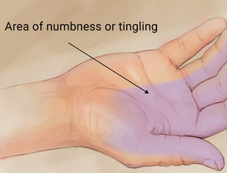
26 We treat for
Carpal Tunnel Syndrome
Rest & Patient Education
Resting from the aggravating cause is important. Education and awareness about what the symptoms and what positions or activities potentially cause carpal tunnel syndrome is important. Sim et al (2011).
Night Wrist Splint
A nighttime wrist splint is beneficial to eliminate wrist bending and therefore carpal tunnel symptoms. Muller et al (2004). Your physiotherapist may recommend a splint. A suitable carpal tunnel wrist splint can be found here: carpal tunnel brace
Physiotherapy
Physiotherapy is beneficial for most carpal tunnel sufferers especially in mild to moderate cases.
Your physiotherapist will address:
Carpal bone mobilisation and flexor retinaculum stretching to open the carpal tunnel. Tal-Akabi & Rushton (2000). Nerve and tendon gliding exercises to ensure full unrestricted nerve motion is available. McKeon & Hsieh (2008). Muscle and soft tissue extensibility. Moraska (2008).
Cervicothoracic spine to correct any referral or double crush syndromes. Kwon et al (2006). Grip and pinch, thumb abduction and forearm strengthening in later phases. Pinar et al (2005). Comprehensive upper limb, wrist and hand ROM strengthening and endurance exercises. Posture, fine motor and hand dexterity exercises. Abd-Elkader et al (2010).
Resting from the aggravating cause is important. Education and awareness about what the symptoms and what positions or activities potentially cause carpal tunnel syndrome is important. Sim et al (2011).
Night Wrist Splint
A nighttime wrist splint is beneficial to eliminate wrist bending and therefore carpal tunnel symptoms. Muller et al (2004). Your physiotherapist may recommend a splint. A suitable carpal tunnel wrist splint can be found here: carpal tunnel brace
Physiotherapy
Physiotherapy is beneficial for most carpal tunnel sufferers especially in mild to moderate cases.
Your physiotherapist will address:
Carpal bone mobilisation and flexor retinaculum stretching to open the carpal tunnel. Tal-Akabi & Rushton (2000). Nerve and tendon gliding exercises to ensure full unrestricted nerve motion is available. McKeon & Hsieh (2008). Muscle and soft tissue extensibility. Moraska (2008).
Cervicothoracic spine to correct any referral or double crush syndromes. Kwon et al (2006). Grip and pinch, thumb abduction and forearm strengthening in later phases. Pinar et al (2005). Comprehensive upper limb, wrist and hand ROM strengthening and endurance exercises. Posture, fine motor and hand dexterity exercises. Abd-Elkader et al (2010).
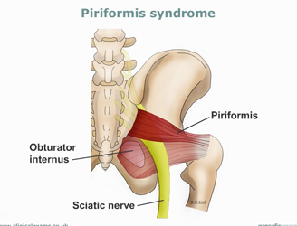
27 We treat for
Piriformis Syndrome
After a thorough assessment of your back, pelvis and hips, your physiotherapist will determine the cause of your pain.
Once your diagnosis is established, treatment could involve any of the following:
Pelvis and spine re-alignment techniques.
Joint mobilisation to restore normal joint mobility, range of motion and function.
Massage or electrotherapy to help decrease pain and spasm in your piriformis and increase blood flow plus soft tissue extensibility.
Stretching program for muscle length and flexibility
Acupuncture or Dry Needling to reduce muscle tightness around the buttock.
Deep core stability and hip strengthening exercises to stabilise your hip, pelvis and spine.
Foot orthotics or exercises, if indicated by your physiotherapist or podiatrist, to help restore foot and lower extremity alignment.
Once your diagnosis is established, treatment could involve any of the following:
Pelvis and spine re-alignment techniques.
Joint mobilisation to restore normal joint mobility, range of motion and function.
Massage or electrotherapy to help decrease pain and spasm in your piriformis and increase blood flow plus soft tissue extensibility.
Stretching program for muscle length and flexibility
Acupuncture or Dry Needling to reduce muscle tightness around the buttock.
Deep core stability and hip strengthening exercises to stabilise your hip, pelvis and spine.
Foot orthotics or exercises, if indicated by your physiotherapist or podiatrist, to help restore foot and lower extremity alignment.
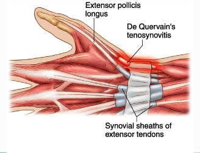
28 We treat for
Tenosynovitis
Your physiotherapist is the best person to individually advise you how to treat your de Quervain's tenosynovitis. They can utilise various local modality and soft tissue treatment options to assist your recovery. Until you are assessed, please try the following.
Rest or Reduce Hand Movements
If at all possible, you must change or stop all activities that cause your symptoms. Take frequent breaks when doing repeated hand and thumb actions. Avoid repetitive hand motions, such as heavy grasping, wringing, or turning and twisting movements of the wrist. Keep the wrist in a neutral alignment. In other words, keep it in a straight line with your arm, without bending it forward or backward.
Thumb-Spica Splint
Your physiotherapist or doctor may want you to wear a special forearm and thumb splint called a thumb-spica splint. This splint keeps the wrist and lower joints of the thumb from moving. The splint allows the APL and EPB tendons to rest, giving them a chance to begin to heal.
Rest or Reduce Hand Movements
If at all possible, you must change or stop all activities that cause your symptoms. Take frequent breaks when doing repeated hand and thumb actions. Avoid repetitive hand motions, such as heavy grasping, wringing, or turning and twisting movements of the wrist. Keep the wrist in a neutral alignment. In other words, keep it in a straight line with your arm, without bending it forward or backward.
Thumb-Spica Splint
Your physiotherapist or doctor may want you to wear a special forearm and thumb splint called a thumb-spica splint. This splint keeps the wrist and lower joints of the thumb from moving. The splint allows the APL and EPB tendons to rest, giving them a chance to begin to heal.
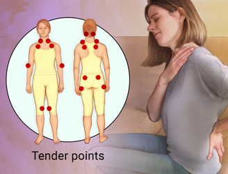
29 We treat for
Fibromyalgia
The management of fibromyalgia is complex, but can be broken down into a number of parts. Treatment tries to help you slowly break the fibromyalgia cycle by addressing each of the points shown in the diagram above.
Understanding your pain and symptoms through education
Exercise in moderation
Medications
Relief of muscle and joint stiffness, tenderness and pain
Managing activity levels and fatigue
Improve ability to cope with daily stress and depression
Sleep health
Surgery
Understanding your pain and symptoms through education
Exercise in moderation
Medications
Relief of muscle and joint stiffness, tenderness and pain
Managing activity levels and fatigue
Improve ability to cope with daily stress and depression
Sleep health
Surgery
30 We treat for
Prenatal & Post Natal Training
As pregnancy progresses, the body begins to undergo a host of physical changes as a way to accommodate the growing baby. More specifically, as the uterus grows, a woman’s center of gravity begins to shift. Further, the pelvic floor takes on additional stress as the baby’s weight increases, and joints begin to loosen in response to hormones. All of these physiological changes make good posture, cardiovascular health, and strength crucial to a healthy and comfortable pregnancy.
Poor posture during pregnancy can weaken the muscles of the back and torso, causing back pain and discomfort during pregnancy. In addition to providing cardiovascular benefits, prenatal exercise strengthens the abdominal muscles, which are needed to support the torso and maintain digestion.
Prenatal fitness is an important component of a healthy pregnancy. Most doctors now recognize that staying physically active during pregnancy allows women to remain low-risk patients, thereby allowing them a wide array of options for labor and delivery.
Poor posture during pregnancy can weaken the muscles of the back and torso, causing back pain and discomfort during pregnancy. In addition to providing cardiovascular benefits, prenatal exercise strengthens the abdominal muscles, which are needed to support the torso and maintain digestion.
Prenatal fitness is an important component of a healthy pregnancy. Most doctors now recognize that staying physically active during pregnancy allows women to remain low-risk patients, thereby allowing them a wide array of options for labor and delivery.
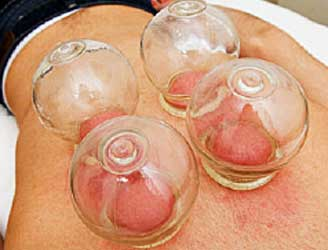
31 We treat for
Cupping Therapy
Cupping therapy is an ancient form of alternative medicine in which a therapist puts special cups on your skin for a few minutes to create suction. People get it for many purposes, including to help with pain, inflammation, blood flow, relaxation and well-being, and as a type of deep-tissue massage.
Cupping therapy might be trendy now, but it’s not new. It dates back to ancient Egyptian, Chinese, and Middle Eastern cultures. One of the oldest medical textbooks in the world, the Ebers Papyrus, describes how the ancient Egyptians used cupping therapy in 1,550 B.C.
Cupping therapy might be trendy now, but it’s not new. It dates back to ancient Egyptian, Chinese, and Middle Eastern cultures. One of the oldest medical textbooks in the world, the Ebers Papyrus, describes how the ancient Egyptians used cupping therapy in 1,550 B.C.